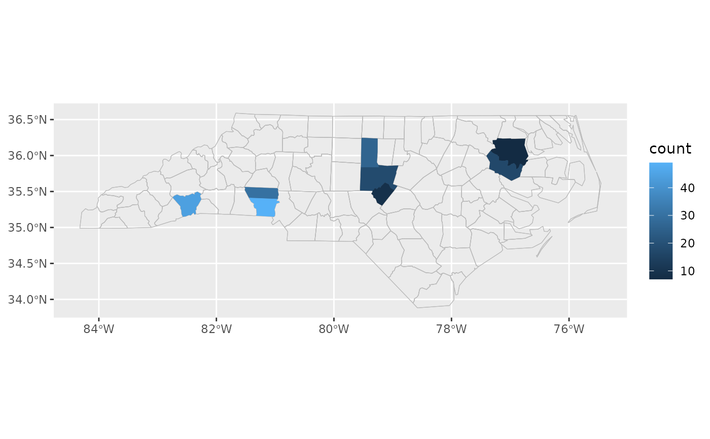
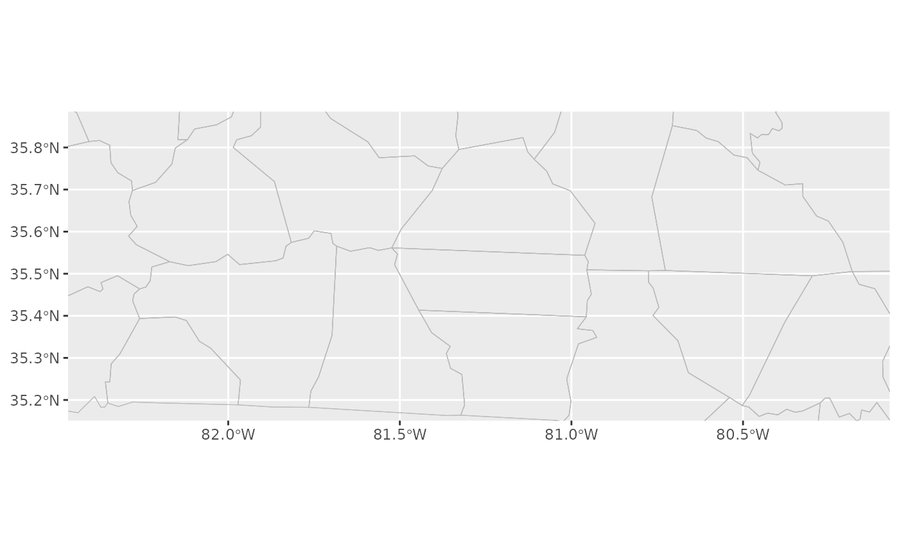

This is a wrapper around coord_automap() that automatically calculates
coordinate limits based on the data and/or any additional locations. The
bounding box will be calculated to encompass all of the included
locations.
Arguments
- include
Vector of feature names that should be shown on the map.
- include_data
Scalar logical, if true then all features with data are also included.
- feature_type
Type of map feature. See
feature_types()for a list of registered types. IfNA, the type is guessed based on the values infeature_names.- ...
Additional arguments passed to
coord_automap().
Details
This should be added to the plot after the call to one of the ggautomap
geoms. It will copy the location aethetic mapping from the first such
layer in the plot. If there is no such layer, it will attempt to use the data
and location mapping found at the top level ggplot() call.
Examples
library(ggplot2)
# zoom in on locations that have data:
cartographer::nc_type_example_2 |>
ggplot(aes(location = county)) +
geom_boundaries(feature_type = "sf.nc") +
geom_choropleth() +
coord_automap_zoom(feature_type = "sf.nc")

# or just zoom in on specific locations regardless of the data:
cartographer::nc_type_example_2 |>
ggplot(aes(location = county)) +
geom_boundaries(feature_type = "sf.nc") +
coord_automap_zoom(include = c("Rowan", "Polk"), include_data = FALSE, feature_type = "sf.nc")
